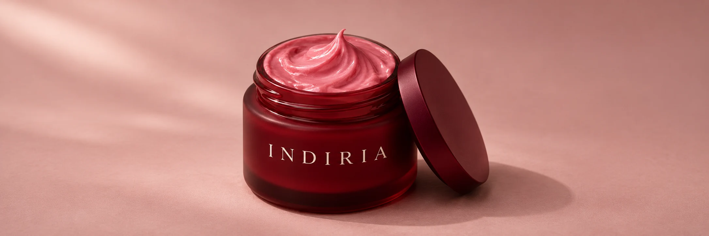
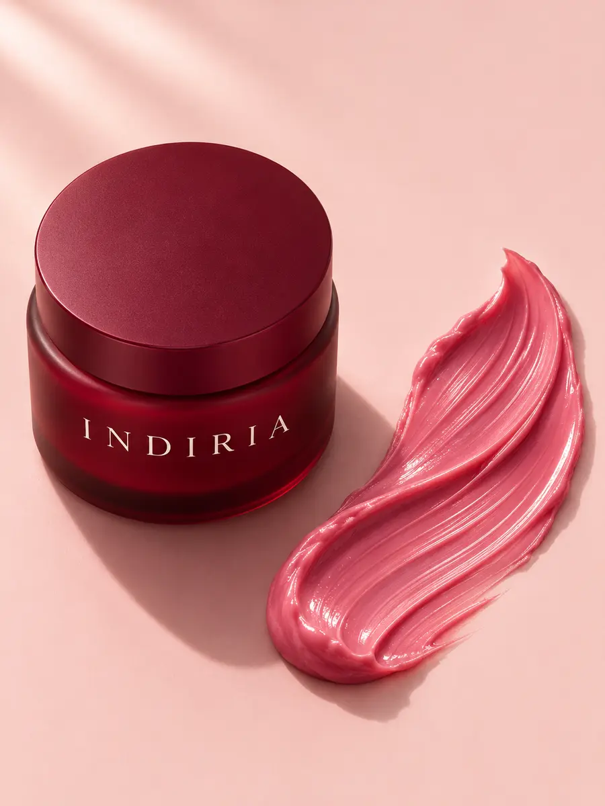
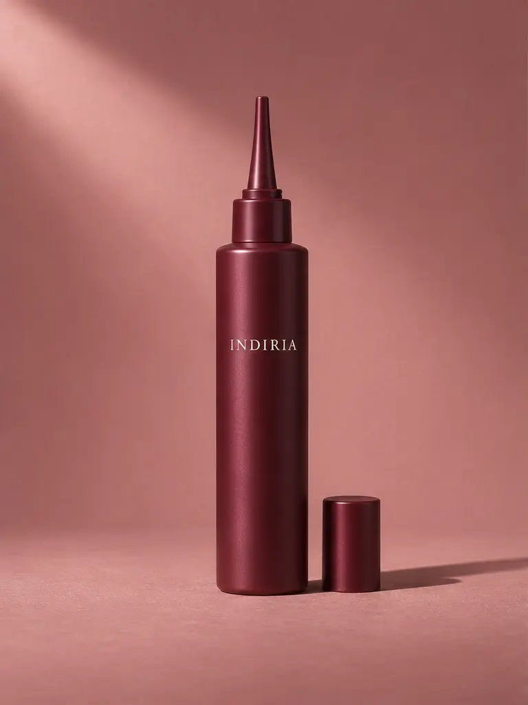
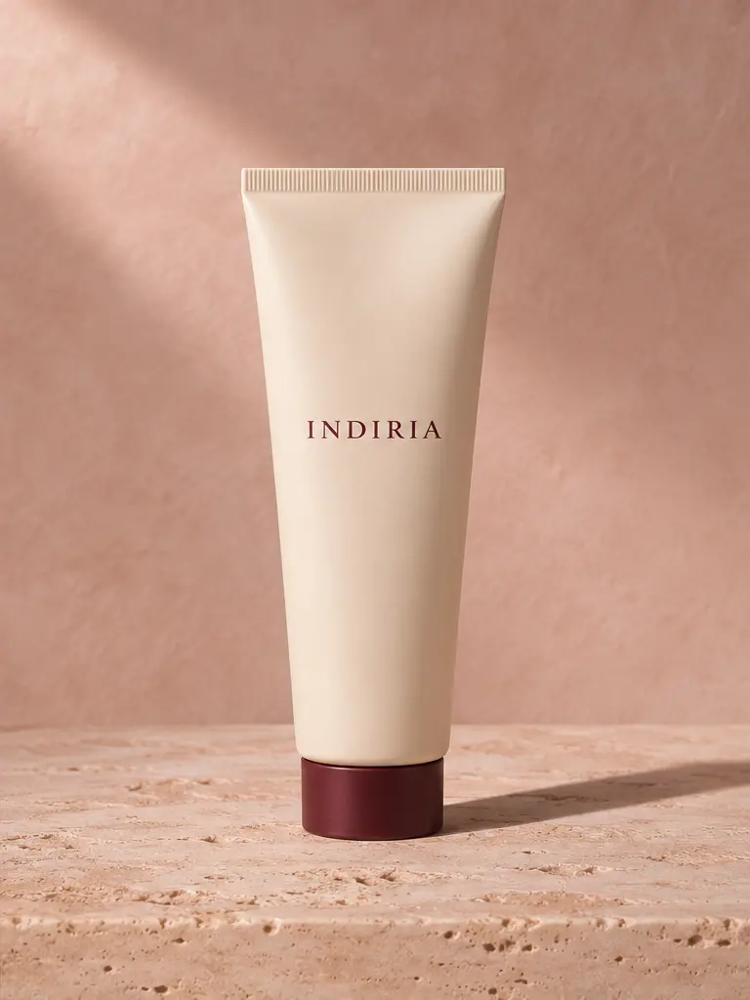
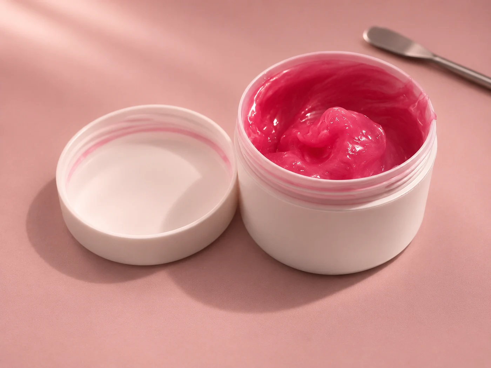
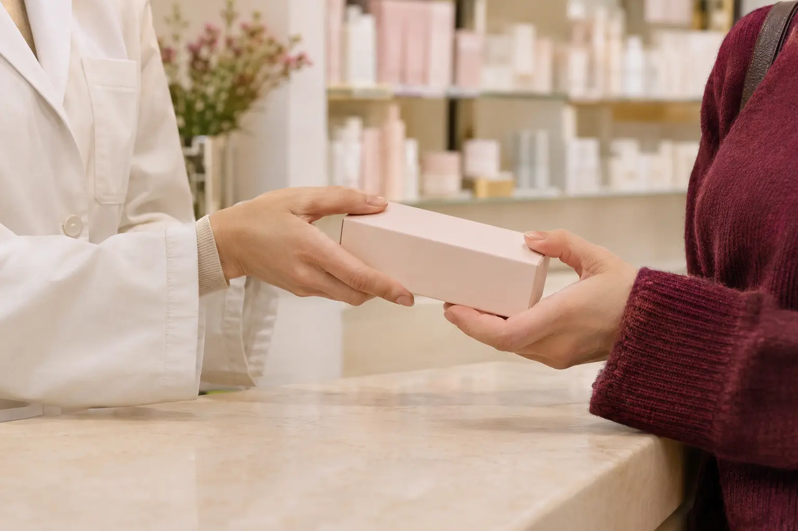

Osservazioni d’uso · 7 giorni
Gomiti: pelle secca e ruvida
Al settimo giorno le squame chiare sono meno evidenti; l’arrossamento è ancora visibile.
Ricerca italiana · Bari
La prima crema INDIRIA nasce per la cura cosmetica quotidiana della pelle secca e a tendenza psoriasica.
Crema corpo · Prototipo in sviluppo

La crema corpo è il nostro primo progetto. Per il cuoio capelluto e le zone delicate stiamo studiando due formulazioni dedicate.

PrototipoPer le aree secche e ruvide di mani, gomiti e ginocchia.

In sviluppoUna formula da distribuire tra i capelli, direttamente alla radice.

In sviluppoLa ricerca si estende al viso e alla pelle delle zone intime esterne.
Scopri le formulazioni in sviluppo e le osservazioni d’uso.
Crema corpo · Prototipo
Per la pelle secca e ruvida del dorso delle mani, il progetto punta a morbidezza e a un aspetto più levigato. Esplora gli scatti dei giorni 1, 3 e 7.

Idratazione e azione esfoliante in una crema corpo dedicata alla pelle secca, ruvida e desquamata.
La formula emolliente è pensata per ammorbidire le zone ruvide, attenuare la visibilità delle squame e degli arrossamenti e favorire il comfort cutaneo. Un gesto da inserire nella routine quotidiana, per una pelle più morbida al tatto e visibilmente più levigata.
Primi cambiamenti visibili già dal 3° giorno e ulteriori progressi entro il 7°–8° giorno.
Scopri le osservazioni d’usoEsplora le fotografie originali di mani, gomiti e piedi. Scegli l’area e i giorni da affiancare, poi ingrandisci i dettagli direttamente nelle immagini.
Osservazioni d’uso · Giorni 1, 3 e 7
Entrambe le mani, nello stesso ordine in ogni giornata.
Gli scatti dei giorni 1, 3 e 7 permettono di confrontare desquamazione e arrossamenti sul dorso di entrambe le mani.
Osservazioni d’uso · 7 giorni
Al settimo giorno le squame chiare sono meno evidenti; l’arrossamento è ancora visibile.
Osservazioni d’uso · 4 giorni
Tre fotografie della stessa area del piede: giorno 0, 2 e 4.
Le sequenze documentano singoli casi, con luci e inquadrature diverse. Da sole non permettono di stabilire quanto del cambiamento sia dovuto alla crema.
INDIRIA guarda alle farmacie, alle parafarmacie e alla vendita online per portare la crema corpo sul mercato europeo.

Mercato mondiale potenziale annuo della dermocosmesi per la pelle a tendenza psoriasica.
Segmento europeo stimato per le forme lievi o moderate.
Confezioni che puntiamo a vendere in Europa nel terzo anno di commercializzazione.
43 milioni di persone nel mondo vivevano con la psoriasi nel 2021, secondo le stime del Global Burden of Disease. Li et al., Healthcare
Ricerca e sviluppo
PhD in Scienze farmaceuticheFinanza e raccolta fondi
Certificazione PRINCE2Operations e affari regolatori
PhD in BiochimicaDisponibilità, aree di interesse e osservazioni d’uso: i punti essenziali sul progetto INDIRIA.
La crema corpo è un prototipo in sviluppo. La data di lancio e i punti vendita saranno comunicati quando disponibili.
Il progetto è dedicato alla pelle secca, ruvida e desquamata. La formula emolliente è pensata per ammorbidire le zone ruvide e migliorare l’aspetto della pelle.
Le fotografie originali documentano l’aspetto della pelle nel corso delle osservazioni d’uso della crema. Ogni sequenza riguarda un singolo caso: i cambiamenti osservati possono variare da persona a persona ed essere influenzati anche dallo stato emotivo, dai livelli di stress e dalla costanza nel seguire le indicazioni d’uso della crema.
Per cuoio capelluto, viso e zone intime esterne sono allo studio formulazioni dedicate. Destinazione d’uso e modalità di applicazione dipenderanno dalle verifiche specifiche per ogni formula.
Puoi scrivere a Oscar Petrucci per informazioni sul progetto o per contatti con farmacie, distributori e laboratori.
Rappresenti una farmacia, un distributore o un laboratorio? Per informazioni sul progetto puoi contattare Oscar Petrucci.
info@indiria.eu +39 123 456 7890